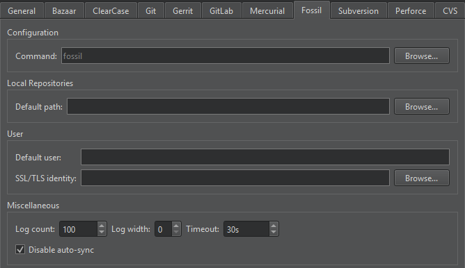

Fossil
Fossil is an open source distributed version control system, designed and developed by the creator of SQLite. A stand-alone Fossil executable has a source control management engine, web interface, issue tracker, wiki, and built-in web server. Fossil is available for Linux, Windows, and macOS.
To use Fossil from Qt Creator, you must install and configure it, as described in the following sections.
Configuring Fossil
- Download the Fossil SCM client and install the
fossilexecutable file in yourPATH. - Create or designate a directory to store local Fossil repositories and remote clones. For example:
~/fossils/qt. - Select Preferences > Version Control > Fossil, and set the designated directory in the Default path field.

To create a local Fossil repository, select Tools > Fossil > Create Repository.
To clone a remote Fossil repository, select File > New Project > Import Project > Fossil Clone.
Additional Fossil Functions
In addition to the standard version control system functions described in Version Control Systems, the Fossil submenu has the following items:
| Menu Item | Description |
|---|---|
| Pull | Pull changes from the remote repository. |
| Push | Push committed changes to the remote repository. |
| Update | Change the version of the current checkout. Any uncommitted changes are retained and applied to the new checkout. |
| Settings | Configure the settings of the local repository. |
Fossil Preferences
To set Fossil preferences, select Preferences > Version Control > Fossil:
- Command specifies the path to the command-line client executable.
- Default path sets the path to the directory to store local repositories by default.
- Default user specifies an existing user who becomes the author of changes made to the repository.
- SSL/TLS identity sets the SSL/TLS client identity key to use for authentication if the server requests it.
- Log count sets the maximum number of lines the log can have.
- Log width sets the width of log entry lines to 20 or above. The value 0 shows a single line per entry.
- Timeout sets a timeout for version control operations.
- Disable auto sync disables automatic pull before a commit or update and automatic push after a commit or tag or branch creation.
See also Set up version control systems, Use common VCS functions, and Version Control Systems.